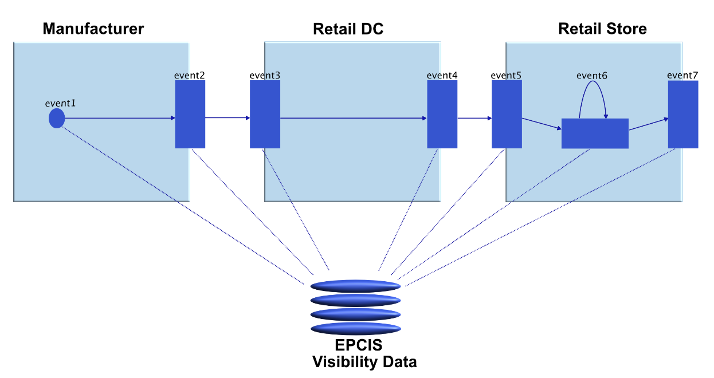
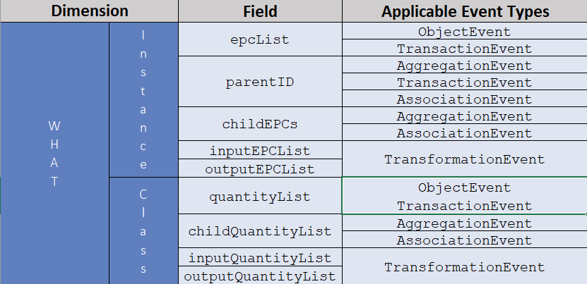
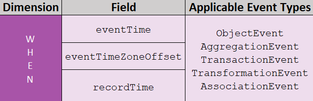
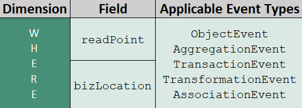
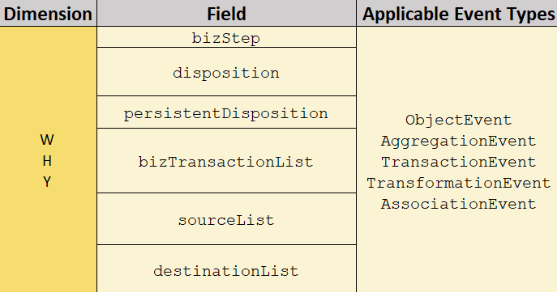
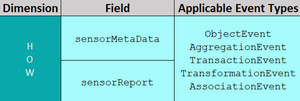
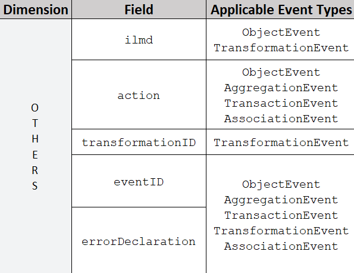

EPCIS
Introduction & History
EPCIS is an open ISO/IEC/GS1 standard that allows visibility data information to be captured and shared within an organization or between multiple organizations in the form of an event. The EPCIS standard is beneficial to organizations that move products between stages within the same organization as well as between organizations. The EPCIS event data can be used for all physical objects such as assets, products, logical units, reusable transport items, etc., or can also be used for digital objects such as music downloads, electronic books, electronic coupons, subscriptions, etc. The EPCIS standard was designed to improve cooperation between trading partners by exchanging comprehensive information on physical and digital items. The initial version of EPCIS 1.0 was released at the beginning of 2007. Later, EPCIS 1.1 and 1.2 were released in 2014 and 2016 respectively with various enhancements. The latest version, EPCIS 2.0, is published in June 2022 with a lot of significant enhancements.
The main objective of the EPCIS data is to provide visibility information within a specific business process. The following figure 1 describes how EPCIS data may be generated within a simple business process.

Figure 1: Generation of EPCIS events in a simple business process.
Above figure depicts a simplified business process in which a manufacturer produces an item, which is then packed and shipped to the Retailer DC (Distribution Center). The item is received by Retailer DC, who then sends it to the appropriate Retail Store. The item is received by the retail store and moved to a sales area where a consumer can purchase it. The simplified flow of goods can consist of the following critical tracking events: packing, shipping, receiving the items, etc. At every step within these business processes, an EPCIS event is created. This EPCIS event provides information on what exactly was occurring to the items at that particular step. The entirety of all these EPCIS events provides a complete picture of the whole business process.
EPCIS events consist of context information comprising the five different dimensions What, When, Where, Why, and How. Each of these dimensions consists of multiple fields that make up the event information. Each dimension is independent of one another and not mandatory to include all dimensions/fields of dimensions in the EPCIS event. For example, the following pieces of information are produced for four dimensions when a product is shipped from the manufacturer to retail DC in the V2 business process mentioned above:
-
What: It contains what items or containers were sent to DC.
-
When: It contains the date-time information when the items were shipped, along with the respective time zone offset information.
-
Where: It contains information about the location from where the shipment was sent. Also, where the items are expected to be after the event has occurred.
-
Why: It contains the business context of the information. For example, the business step in this particular event is shipping.
Areas of application for EPCIS
EPCIS can stitch together individual events that have occurred over time in a particular supply chain within an organization or across multiple organizations. Hence, EPCIS provides many applications, such as:
-
Tracking: An organization can find exactly where the objects are present within the supply chain using the most recent EPCIS event.
-
Tracing: An organization can track the objects to their origin using all EPCIS events associated with the particular object.
-
Analysing: All the EPCIS events collected over a particular time can be interpreted in a specific business context.
-
Automation: EPCIS events can trigger various other business processes in real-time.
-
Verification: Comparison of the real-time status of the object using the current EPCIS event and the anticipated state of the object.
Benefits of EPCIS
EPCIS can be used in various industries such as automotive, healthcare, food services, transport, retail, etc. It provides many benefits to organizations and customers, depending on the type of industry sector. Following are some most common beneficial aspects of the EPCIS standard in various industry sectors:
• Identify the origin of the object to support anti-counterfeit measures.
• Identify a chain of custody for an object along with date and time information.
• Validation of digital coupons in real-time.
• Recognise the freshness of the product.
• Provide notification on various attributes such as location, timing, status, quantity, or quality of the product in real-time.
• Ensure that items reach the consumers at the right location and time.
• Increase consumer protection.
EPCIS event types
The five dimensions of the EPCIS provide information related to various activities in the real world for physical objects and in the virtual world for digital objects. However, there are five types of events available in EPCIS that are used based on the type of the process occurring to objects. All these event types can include the five dimensions of the EPCIS, but each of the dimensions may have different attributes/fields depending on the type of the event.
ObjectEvent
An ObjectEvent represents the EPCIS event information occurring to one or many physical or digital objects. In other words, they represent simple observations of business objects. Instance-level EPC (Electronic Product Code) or class-level EPC without any relationship may appear in the ObjectEvent. A simple example is a pallet that is shipped or received using the pallet’s SSCC (Serial Shipping Container Code).
AggregationEvent
An AggregationEvent is used when one or more objects are either aggregated together or disaggregated. In this type of event, there is a strong physical relationship between the aggregated objects, and they are present at the same location at a given time until they are disaggregated. The AggregationEvent is reversible - meaning that upon the disaggregation, original objects can be obtained. Examples related to this type of event are the packing of cases onto a pallet or the unloading of a container.
TransactionEvent
A TransactionEvent represents the type of EPCIS event in which one or several physical or digital objects are associated or disassociated with business transactions—for example, linking the pallet and cases of the milk cartons to its commercial invoice.
TransformationEvent
A TransformationEvent is used when one or more physical or digital objects are consumed entirely or partially, and corresponding outputs are produced. Unlike the AggregationEvent, a TransformationEvent is not reversible. Hence, after a transformation, the original objects cannot be recovered. Also, the process of transformation may occur over a considerable amount of time—for example, the mixing of several ingredients to bake a chocolate cake. Since all the ingredients are already mixed, there is no way to recover them back.
AssociationEvent
An AssociationEvent describes the association or disassociation of one or more physical or digital objects with their respective parent object or with a particular location. It is a bit similar to the AggregationEvent, but AggregationEvents do not allow the correlation of objects with the physical location. Also, in some instances, the association can be permanent. Identical to the AggregationEvent, there is a close correlation between the associated objects. All the associated objects appear together at the same place at the same time until they are disaggregated. An AssociationEvent is used when the objects need to be associated with the physical location or for long-term association. For example, an AssociationEvent is used to construct the wagon using various objects such as screws, tires, sensors, etc. which can be later used to transport the vegetables or cosmetic cases using the AggregationEvent. If an AggregationEvent was used to construct the wagon, then it may not be easy to distinguish between the disaggregation of the transferred objects and the wagon.
Dimensions of EPCIS
As mentioned previously EPCIS events consist of context information in the form of five dimensions. Each of these dimensions consists of various other fields depending on the type of the event. Following are the five dimensions:
What
The What dimension of an EPCIS event comprises identifiers of the physical or digital objects that were involved in the particular event. For each business object, GS1 provides appropriate identification schemes, for instance, GTIN (Global Trade Item Number), SGTIN (GTIN with serial number), SSCC (Serial Shipping Container Code), GIAI (Global Individual Asset Identifier), etc. The following figure 2 describes various attributes available in the What dimension based on different event types:

Figure 2: Attributes of What dimension corresponds to respective event types.
Instance Level:
When an identifier is associated with each participating object, it is called an instance-level identifier. Therefore, no two objects can be related to the same identifier. For example, manufacturers may use a unique number to differentiate each product, such as a toy, phone, etc. Instance level identifiers are represented using the EPC. GS1-compliant values of instance-level identifiers can either be represented as an EPC URI (Uniform Resource Identifier) or GS1 Digital Link URI format.
Class level:
If multiple objects are associated with the same identifier, then these types of identifiers may be considered class-level identifiers. For example, an identifier can be attached to a pallet which may consist of hundreds of produced toys. Class level identifiers can also, populate the Quantity element. The structure of the Quantity element consists of the following items:
EPC Class: A class level identifier to which the specified quantity of objects belongs.
Quantity: It is an optional field indicating how many or how much of the EPC Class. If not provided, it is assumed to be of an unknown quantity.
UOM: It stands for Unit Of Measure. It is an optional field, and if provided, indicates the measurement of the quantity by a specific unit code (e.g. KGM for a kilogram).
When
The When dimension of an EPCIS event provides information related to the date and time of the event. The following figure 3 provides an overview of the attributes available in the When dimension:

Figure 3: Attributes of When dimension.
Event time:
It is the date and time at which the event took place. For example, if the objects are received at a docking station on the destination, then an event is triggered. This event includes the exact date and time at which objects were received as event time.
Event time zone offset:
It consists of the time zone in which the event took place. It is essential to display the EPCIS event information with regard to the local time zone; hence time zone offset is critical. For example, if an item is shipped from Germany to India, then the triggered event includes the time zone offset as Germany time zone (Central Europe Time). This time zone information is used on the receiving side, and information can be displayed in IST (Indian Standard Time) time zone.
Record time:
It is the date and time at which an EPCIS event is stored in the EPCIS repository. The record time does not provide information concerning the business steps of the EPCIS event. In contrast to other EPCIS event data, this is not captured at the time of event creation. It is used just for reference which may be useful when retrieving the data from the EPCIS repository.
Where
The Where dimension of an EPCIS event provides information corresponding to the actual physical location where the event took place. It can also offer information about where precisely the items are present after the event. The following figure 4 provides an overview of attributes available in the Where dimension of an EPCIS event:

Figure 4: Attributes of Where dimension.
Read point:
Read point is the exact location where the actual event took place. The event capturing devices such as RFID readers can determine the read point of the event. Consider if the receiving site or docking station receives a box of objects. It is now made to pass through a door portal where scanning is carried out then the location identifier tied to the door is populated as the Read Point for that event.
Business location:
It is the location of items after the particular business process step. Business location is the position where items are considered to be placed or present after a specific event. Suppose the box of items is collected at the receiving side and passes through the door portal to record the receiving event. Following the event, the items are placed in a warehouse, then the location identifier tied to the warehouse acts as Business Location in the EPCIS event.
Why
The Why dimension of an EPCIS event represents the business context of the event. The following figure 5 provides an overview of attributes available in the Why dimension:

Figure 5: Attributes of Why dimension.
Business step:
The business step attribute indicates what type of process was taking place at the time of the event within the context of the business. Some examples of the business step from CBV (Core Business Vocabulary) include receiving, picking, shipping, etc.
Disposition:
The disposition attribute represents the state of the object immediately after the current EPCIS event. Some vocabularies for the disposition fields from CBV (Core Business Vocabulary) are expired, recalled, active, in_transit, etc. For example: If the business step of the current EPCIS event is shipping, then the disposition field can be populated with the keyword in_transit.
Persistent Disposition:
The persistent disposition field is newly introduced with EPCIS 2.0 latest version. It includes one or more business conditions of the object participating in the event after a particular event in a business process. The one or more values in this field can be set or unset independently of each other. The values provided for this attribute are assumed to be in the set condition until it is explicitly unset. According to the CBV, the field values for persistent disposition are similar to the disposition field.
Business Transaction:
In this field, one or more business transactions corresponding to the EPCIS event may be represented. Some examples of the business transactions from CBV are inv (invoice), PO (purchase order), desadv (dispatch advice), etc. The business transaction is constructed using two fields:
Type: This is an optional field that indicates what kind of transaction this particular business transaction denotes.
Business Transaction: An identifier representing a particular business transaction.
Source and Destination:
As the name itself implies, whenever the ownership or possession of the items shifts, these attributes provide additional business context information. In a complex business process, each of the business steps may be carried out by different parties, so it is vital to include the details related to all the parties that are involved in the process. The attributes of the Where dimension read point and business location provide information on the physical location where the business step took place. However, the source and destination attributes indicate the entities that are involved, along with the optional physical location of the business process.
In a multi-step supply chain process, some or all of the events generated using the EPCIS can have the same source and destination information. Following are the fields that structure the source and destination fields:
Source and Destination type: It denotes the type of source/destination. There are three types of source/destination types.
Owning party: It indicates the party who owns the objects at the initial or final endpoint.
Processing party: It denotes the parties who currently have the physical procession of the objects at the initial or final endpoint such as third-party delivery services.
Location: It refers to the physical location of the start or end of the business step.
How
The How dimension of an EPCIS event contains the information related to the list of sensor elements. It denotes the condition of the objects as captured by the sensor devices such as temperature, pressure, speed, etc. The sensor element structure consists of sensor metadata and sensor report. Each parent of the sensor element can have only one metadata and several sensor elements, This is the newly introduced dimension with EPCIS 2.0. The following figure 6 provides an overview of How dimensions:

Figure 6: Attributes of How dimension.
Sensor Metadata:
It is an optional parameter that contains metadata attributes. If included, this metadata is applicable for all sensor report elements which belong to the particular sensor element. Some fields that are available in metadata are time, start time, end time, device id, etc.
Sensor Report:
It is an element that contains one or more attributes that provide information sensor reading. For example, the sensor report may contain information about the temperature, pressure, speed, etc. of the objects. It may also include other attributes such as time, device id, value, UOM, etc.
Additional attributes
Apart from the attributes that are available in the five dimensions, EPCIS provides some additional attributes that can or must be part of the events depending on the type of event. The following figure 7 provides an overview of some additional fields that can enhance the meaning of the EPCIS events:

Figure 7: Additional attributes available in the EPCIS event.
Instance/Lot Master Data (ILMD):
ILMD is a type of EPCIS data describing a particular instance of a physical or digital object, or it can also refer to a specific batch/lot of objects. ILMD is master data that applies to a smaller group. Master data are data that refer to a broad group of objects, such as the production location, weight, or the physical measurements of goods identified by a particular GTIN. ILMD details can be different depending on smaller object classes, such as the expiry date of the objects. Unlike the weight or physical size, the expiration dates can be different for all trade goods depending on the day/time of production and applicable to only a small group of products produced on a specific day/time.
ILMD data can contain any details, such as the date of production, exact manufacturing place, or the weight of products but applicable only for a small group. ILMD data is static in the same way as master data, meaning that they do not change over time with the life of the product. For example, the expiry date never changes for a product. Hence, ILMD cannot be used for the data that may change over the life of an object. ILMD data can be added only when the object comes into existence. Hence, ILMD data can only be specified in the ObjectEvent and in the TransformationEvent.
Action property:
EPCIS action value offers information on how a given event is connected to the object’s life cycle. The values in action fields are independent of the business step carried out. Except for the TransformationEvent, it is mandatory to include the action property in the event. The action field can contain one of the three values irrespective of the event type, and the process carried out. The meaning of these action properties differs based on the type of event used. Following are the three values of action property that can be used within the EPCIS event: ADD, OBSERVE, and DELETE.
Transformation ID:
As the name suggests, it is available only for the TransformationEvent. Transformation IDs are used to link the TransformationEvents together. It is an optional field, and if a value is specified, then inputs of all events sharing the same value may contribute to the output of all events sharing the same value.
Event identifiers:
The Event Identifiers are used to populate the eventID field within the EPCIS event. EventID is not a mandatory field, but if it is included, then it should be globally unique for events except for error declarations. The EventID can be generated using either a UUID (Universally Unique Identifier) or EPCIS event hash ID. These values are unique irrespective of the event in XML, JSON, or any other data present within the EPCIS event. The event hash ID’s can be created using the SHA 256 (Secure Hash Algorithm-256) or other hash functions. An example of the EventID in UUID and hash ID for an event is as follows:
urn:uuid:f81d4gde-8efd-22e0-b876-00b0d92e6bf7
ni:///sha-256;c6407ffcac52ec159528f2b556ba4ac3844c5aa48485c1fd61643e94f0a2d678?ver=CBV2.0
Error declaration:
Every event generated for the objects in EPCIS indicates the forward step taken by the objects in a business process. The entire business cycle consists of a sequence of steps represented in the form of EPCIS events. Sometimes the recorded event might contain some erroneous information due to a faulty device, physical conditions, operator fault, etc. so the historical event may not precisely represent what happened in the real world. EPCIS standard deliberately does not allow to delete or modify the information of already created events because it can affect the flow of business processes or other depending events. Alternatively, a new event can be generated to nullify the previous error event.
The following example provides a situation when an error event is generated: Company A generates an ObjectEvent with action value DELETE for an object with identifier 111 indicating that the object has been destroyed. However, it was later discovered that the actual object had not been destroyed and it is still present in the warehouse. As an event with action DELETE is already present, new events with different values cannot be created for the same identifier in the future. Hence, an error declaration event is created, indicating that the object with identifier 111 was not destroyed.
The ErrorDeclaration tag within an EPCIS event indicates that this occurrence has special meaning in comparison to regular EPCIS events. It also indicates that previous events are incorrect and contain some erroneous information. The error events include the same information as the original (erroneous) event, except that they have an additional ErrorDeclaration tag that is not present in the actual event. The ErrorDeclaration tag may contain the following elements:
Declaration Time: Indicates the date and time during which declaration of error is made.
Reason: It is an optional field that indicates the cause for the previous error event.
Corrective Event IDs: It is also an optional field. If it is provided, it indicates the eventID field of an event that was in error.
Terms associated to EPCIS standard
Following are some of the additional terms associated to EPCIS standard:
Syntax type
Until EPCIS 1.2, standard vocabulary elements in the events were represented only using a URN (Uniform Resource Name) format. However, with the release of EPCIS 2.0, they can be represented using either a URN or a Web URI (Uniform Resource Identifier) scheme. So all the standard vocabularies that are available in CBV can be specified in one of the following syntaxes:
urn:epcglobal:cbv:qualifier:payload
https://gs1.org/voc/qualifier-payload
The qualifier denotes the vocabulary type, and the payload defines the element in the vocabulary. Following is the example of the standard vocabulary for business step shipping in URN and Web URI format:
urn:epcglobal:cbv:bizstep:shipping
https://gs1.org/voc/Bizstep-shipping
GS1 Company Prefix (GCP)
If an organization wishes to become a member of GS1, then a unique identification code is generated and distributed to a particular organization. This identification code is known as GCP (GS1 Company Prefix). GCP string consists of four to twelve digits, and it is used to identify each organization within the context of GS1 uniquely. This GCP can be used as a foundation to generate unique identifiers for their locations (GLN), goods (GTIN), shipments (SSCC), etc. The GCP example of a product identified by an SGTIN EPC URI is as follows:
urn:epc:id:sgtin:CompanyPrefix.ItemRefAndIndicator.SerialNumber
urn:epc:id:sgtin:2345678.190123.987
As we can observe from the syntax format above, 2345678 is the GCP assigned to a particular organization. 90123 is the item reference, 1 is the indicator digit, and 987 is the serial number.
Core Business Vocabulary (CBV)
Core Business Vocabulary (CBV) is the accompanying data standard for EPCIS. The main objective of the CBV is to provide various vocabulary elements that can be utilized in conjunction with the EPCIS standard. The vocabularies in this standard ensure that all parties involved in the sharing of EPCIS data have a common understanding of the data. If each organization proprietary their values/identification schemes in EPCIS, then it can be challenging for other organizations to understand the event information. The CBV-defined vocabularies are the core component of the EPCIS data model, and it covers a broad set of industry sectors that have common business scenarios. EPCIS standard has the provision to add user-specific vocabulary elements, but it is recommended to use the CBV standard to the greatest possible extent. CBV provides the standard vocabulary list for various fields in the EPCIS such as business step, disposition, source and destination type, persistent disposition, sensor elements, etc.
Along with the new release of EPCIS 2.0, CBV 2.0 has also been planned to release in June 2022. CBV was previously known as Core Business Vocabulary, but with the release of 2.0, it has been renamed Core Business Vocabulary. In comparison to previous versions, CBV 2.0 consists of various new vocabularies for the fields such as business step, disposition, business transaction type, etc. Also, it includes vocabulary elements for newly introduced data fields in EPCIS 2.0, such as sensor elements, persistent disposition, etc.
Enhancements in EPCIS 2.0 version
EPCIS 2.0, which was published in June 2022, is the most recent version and has significant enhancements over EPCIS 1.2. Following are some of the significant advancements in EPCIS 2.0, as previously discussed in some of the preceding sections:
• Events were solely represented in XML format until EPCIS 1.2, however with EPCIS 2.0, events may now be specified in XML and/or JSON/JSON-LD format.
• Identifiers and vocabulary information were exclusively stored in URN format until EPCIS 1.2; however, they can be expressed in URN or Web URI format with EPCIS 2.0.
• A new dimension How has been introduced that can represent sensor information.
• The new AssociationEvent event type has been added.
• New attribute Persistent Disposition has been added.
In addition, several improvements have been incorporated. For further details, refer the official GS1 EPCIS 2.0 specifications.
Example of an EPCIS event
So far, the documentation provided various information on EPCIS standards such as different dimensions, event types, fields available in the event, etc. The following listings provide an example of a simple EPCIS ObjectEvent in both XML and JSON/JSON-LD format. The events accommodate a single instance-level object and a single class-level identifier that is part of a shipping event. These events include four dimensions and the corresponding fields in them, such as recordTime, eventTime, readPoint, source, destination, etc. The XML format consists of the identifiers and standard vocabularies in URN format whereas the JSON/JSON-LD format consists of identifiers and standard vocabularies in Web URI format:
EPCIS event in JSON/JSON-LD format:
{
"@context": [
"https://ref.gs1.org/standards/epcis/2.0.0/epcis-context.jsonld"
],
"type": "ObjectEvent",
"eventTime": "2022-05-01T08:10:10Z",
"recordTime": "2022-05-16T13:03:43.010235Z",
"eventTimeZoneOffset": "+02:00",
"eventID": "urn:uuid:aed0c443-7be2-4b64-8fd6-972ca76ef2c2",
"epcList": [
"urn:epc:id:sgtin:7547845584.887.100"
],
"action": "ADD",
"bizStep": "shipping",
"disposition": "in_transit",
"readPoint": {
"id": "urn:epc:id:sgln:7587875478.45.10"
},
"bizLocation": {
"id": "urn:epc:id:sgln:8577747457.85.20"
},
"quantityList": [{
"epcClass": "urn:epc:class:lgtin:6456675455.645.200",
"quantity": 100,
"uom": "KGM"
}],
"sourceList": [{
"type": "owning_party",
"source": "urn:epc:id:sgln:5747587485.84.100"
}],
"destinationList": [{
"type": "processing_party",
"destination": "urn:epc:id:sgln:7854785487.45.200"
}]
}
EPCIS event in XML format:
<ObjectEvent>
<eventTime>2022-05-01T08:10:10Z</eventTime>
<recordTime>2022-05-16T13:03:43.01Z</recordTime>
<eventTimeZoneOffset>+02:00</eventTimeZoneOffset>
<eventID>urn:uuid:aed0c443-7be2-4b64-8fd6-972ca76ef2c2</eventID>
<epcList>
<epc>urn:epc:id:sgtin:7547845584.887.100</epc>
</epcList>
<action>ADD</action>
<bizStep>urn:epcglobal:cbv:bizstep:shipping</bizStep>
<disposition>urn:epcglobal:cbv:disp:in_transit</disposition>
<readPoint>
<id>urn:epc:id:sgln:7587875478.45.10</id>
</readPoint>
<bizLocation>
<id>urn:epc:id:sgln:8577747457.85.20</id>
</bizLocation>
<quantityList>
<quantityElement>
<epcClass>urn:epc:class:lgtin:6456675455.645.200</epcClass>
<quantity>100.0</quantity>
<uom>KGM</uom>
</quantityElement>
</quantityList>
<sourceList>
<source type="urn:epcglobal:cbv:sdt:owning_party">urn:epc:id:sgln:5747587485.84.100</source>
</sourceList>
<destinationList>
<destination type="urn:epcglobal:cbv:sdt:processing_party">urn:epc:id:sgln:7854785487.45.200</destination>
</destinationList>
</ObjectEvent>
OpenEPCIS
benelog GmbH & Co. KG is an organization located in Kerpen, Germany that focuses on development of software and system architecture. The developed software and applications operate effectively and efficiently in the fields of big data processing, complex, scalable, cloud-based environments. benelog GmbH & Co. KG designed and developed OpenEPCIS implementation based on the EPCIS standard. We are well versed with the ins and outs of the EPCIS standard because we are part of the GS1 core member group that assisted in standardizing EPCIS 2.0 and continue to work on various implementations related to EPCIS. We have designed and developed several open source tools and projects associated with EPCIS standard as part of our contribution to the EPCIS community, which any entity can utilize for their use (Note: more on the tools and projects discussed later in this documentation).
Since EPCIS documents might include thousands or millions of events, it is necessary to handle them effectively to ensure that memory utilization and the system on which they are executing are not overworked. We at OpenEPCIS team, consistently uses the latest cutting-edge processes and technologies to develop all the products and services. As a result, all our developments function effectively and efficiently even while managing enormous amounts of data without experiencing any performance problems. The OpenEPCIS team also makes sure that all our developed tools/projects are available in a various formats so users have a choice of alternatives to pick from and are free to select the best option depending on their needs, knowledge, and ease of access.
If any organization wishes to implement the EPCIS standard within their system then we encourage them to make use of the open-source reference implementation OpenEPCIS, because purchasing commercial solutions can be expensive and creating a custom system can take a lot of time and effort. Based on the most recent EPCIS 2.0, OpenEPCIS has been developed utilizing cutting-edge technology and, as previously mentioned, is highly scalable. Using the current standards, tools, and knowledge, we assist enterprises of all types and scales in seamlessly and successfully integrating the EPCIS standard.
Contact
We are delighted to talk if you have any questions, suggestions, or would want to work with us on any projects. Send us an email at info@openepcis.io.
Quick links
- Official EPCIS documentation
- Official CBV documentation
- OpenEPCIS projects
- About benelog GmbH & Co. KG